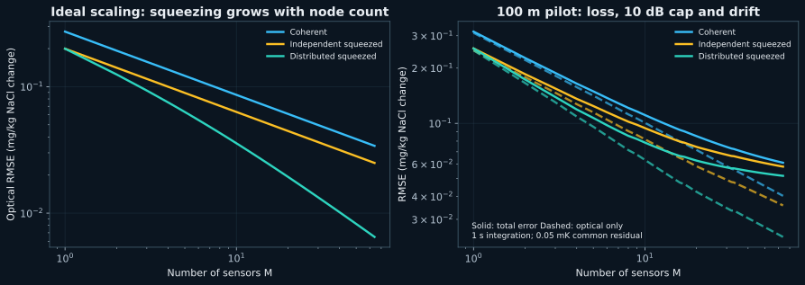
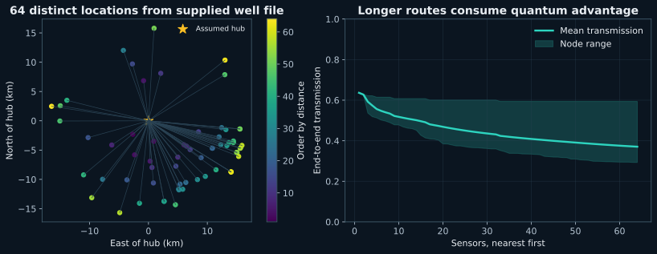
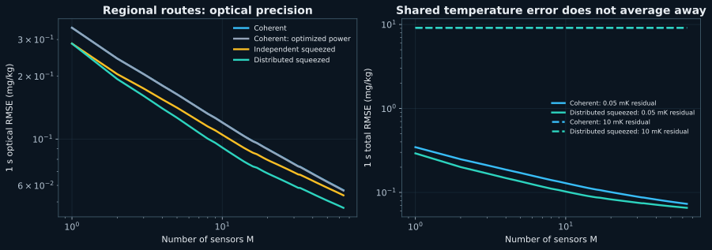
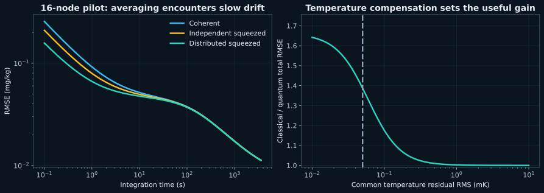
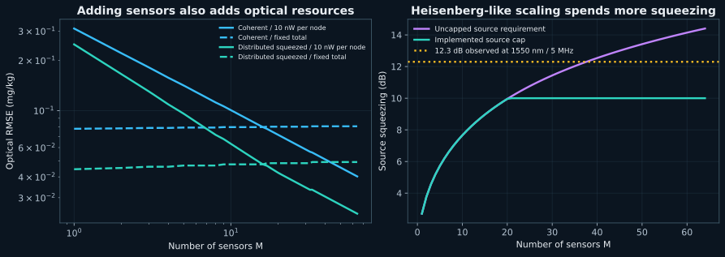
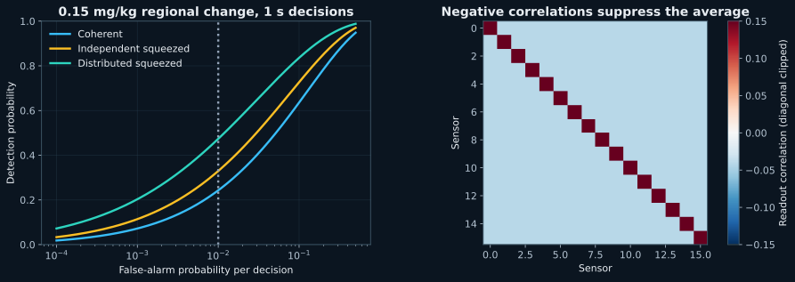
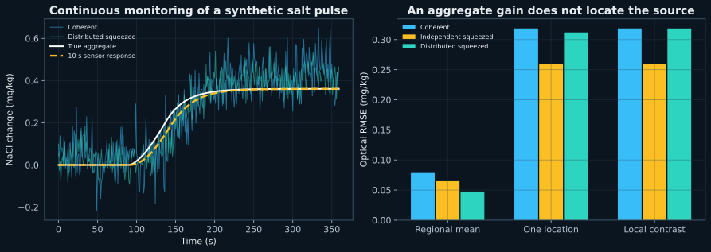
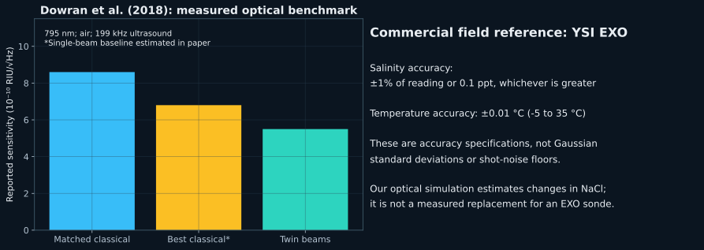
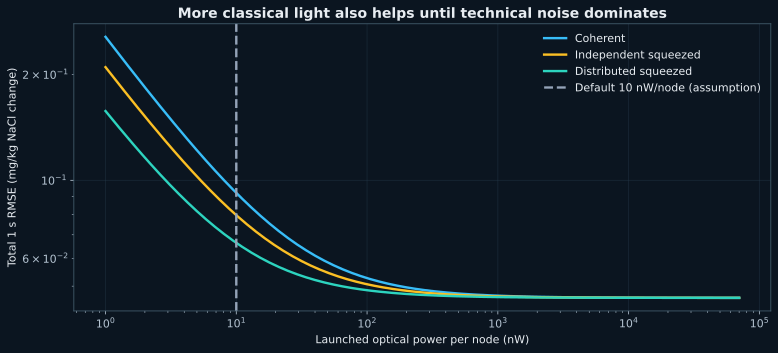

08 feasibility map

Ten reproducible simulation figures. Concentration units are differential NaCl-equivalent mg/kg. Source measurements and proposed device assumptions are distinguished in the project documentation.








